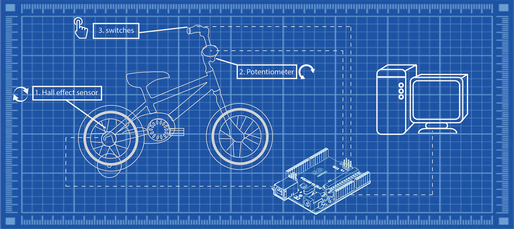
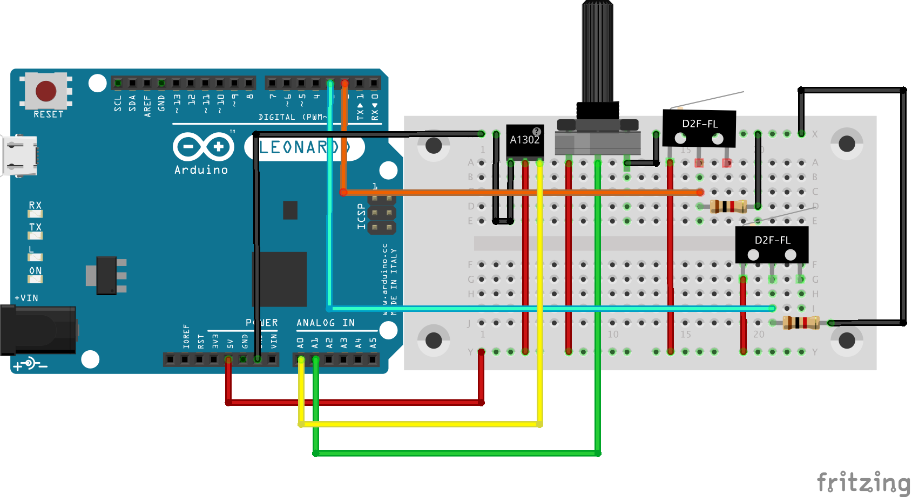
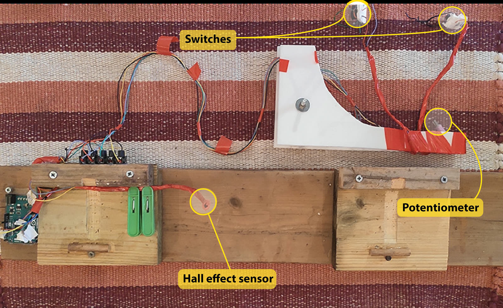

Despite not setting the best example for leading a healthy lifestyle, my wife and I do try to eat our greens, avoid too much junk, and keep in shape. Our 5-year-old, on the other hand, couldn't care less about doing any physical activity, unless it gets him closer to his (my…) iPad.
Normally, this issue is partially remedied simply by being a kid, which involves a fair amount of running, climbing, falling… and recently cycling! But unfortunately, with the advent of the COVID-19 pandemic, we can't really do any of that.
So, I turned his bicycle into a keyboard.
Now, he can play his favourite computer games and exercise at the same time! In this short article, I'll walk you through the process of building your very own keyboard bike.
Foundations
The first step is turning the bicycle into an indoor training bike by getting the rear wheel to spin freely without touching the ground, and allowing the handlebars to turn freely as well. If your kid is propelled forward, you should NOT proceed to the following steps.
There are many ways of getting the bike to remain in place while spinning the pedals: hanging the bicycle from the ceiling, digging a hole in the floor beneath the wheel and many more. I personally used the training wheels to support the rear, but this is your place to get creative, and more importantly, be responsible. I am deliberately avoiding getting into too much detail about my implementation of this part (you can get a pretty good idea from the various pictures and GIFs in this article…) as it is your responsibility to make sure that the bicycle is secure and safe to use.
The plan

After securing the bike so that it can be pedalled in place, we will connect sensors to capture the rotation of the rear wheel, the position of the handlebars, and some buttons for extra control (these can easily be programmed later to map to any keyboard key). Data from all sensors will be captured and transformed by an Arduino that will function as a keyboard and send keystrokes to a computer running a (most likely racing) game.
Hardware
We must use a board that can function as a USB keyboard. I used an Arduino Leonardo.
I used 3 types of sensors:
- A1302 Hall effect sensor: this sensor changes its output voltage when in the proximity of a magnetic field. We will use it to transform the rotation of the rear wheel into a forward key press.
- 10K ohm linear potentiometer: used to transform the handlebar orientation into left/right keys.
- Microswitch: used as extra controllers. I highly recommend using this type of switch (a limit switch) rather than going for fancy buttons. These switches are very responsive, whereas buttons can sometimes be challenging for a kid to press.
Connecting the parts
Hall effect sensor
By placing magnets on the rear wheel, and positioning the sensor close by (as close as possible without touching the wheel), we can sense the wheel's rotation as the magnets pass by the sensor. I used two magnets, equally spaced (that is, ~180 degrees apart).
A tip for attaching the magnets: you could probably find a more elegant solution, but the one I used here is to wrap the magnets in plastic wrap and twist the ends, like a candy wrapper (I am referring to the white blobs seen spinning with the wheel above). Then use the loose ends to tie the magnets to the wheel's spokes, and secure with hot glue.
In order to get the sensor (this is the red vertical rod above; the sensor itself is located at its end) as close to the wheel as possible, I mounted it on a flexible wire (I used some heavy-duty electrical wire, but any wire that will flex and keep its position will do).
Potentiometer
The potentiometer needs to be connected to the pivot point of the handlebars. There should be a socket for an Allen wrench at that point. I used a fitting driver bit and connected it to the potentiometer. Originally, my plan was to solder both parts together, but driver bits have low (no) solderability. I ended up taking a short piece of straw (seen below in violet), sticking the potentiometer and driver bit in from both sides, and injecting it with hot glue to keep everything together. It's solid as a rock.
As for securing the potentiometer to the bike frame, you will again need to get creative. My solution (which can be seen in the image at the end of the article showing all components detached from the bike) was based on making a plexiglass "arm" to hold the potentiometer in place, and may not work for your child's bike. The idea is simple: the potentiometer needs to spin with the handlebars. Simple as it is, the implementation can be quite challenging…
Switches
I placed one of the switches behind the (redundant) front-wheel brake lever, and the other one behind the not-redundant back-wheel brake lever, and disconnected this brake, so that the switches are pressed by pressing the brakes, which feels very natural.
Again, I'm not taking any responsibility here. If you feel the supports you made in part 1 are not strong enough and are worried about obstructing and/or disconnecting brakes, you can, and should, place the buttons somewhere else. There's no right or wrong, as long as it's comfortable and safe. I limited myself to two buttons, but you can obviously go as high as the board allows.
Wiring

A note on thinking ahead
After completing keyboard-bike version 1.0, I set out to improve it by making sure I could easily disconnect all components and reassemble them again as quickly as possible. This required some tweaking that could have been avoided if I had thought of it from the get-go. It took me nearly 2 hours to upgrade to keyboard-bike version 2.0, but it now takes less than a minute to assemble or disassemble.

Another point to keep in mind is the best place to secure the board. I thoughtlessly put it on the side my son gets on and off the bike. In retrospect, I should have chosen the other side…
Code
As explained in the hardware section, the keyboard bike setup is composed of 3 types of sensors: a Hall effect sensor, a potentiometer, and buttons. I'll explain the code for each component separately.
Hall effect sensor
The Hall effect sensor is "activated" when the wheel spins and the magnets pass by the sensor, inducing a change in output voltage. For this part, I switched on the key (the forward key in my case) whenever there was an absolute change in voltage above a certain threshold (hall_effect_threshold). I then keep it on and start counting back for a certain amount of time (drive_decay_const). This allows tuning the amount of motion you get from each "spike". Increase the value of drive_decay_const to get more movement.
Potentiometer
Here we're basically trying to convert an "analog" motion of turning the handlebars into "binary" left or right clicks. A continuous press is way too dramatic if you just want to make small adjustments, so the amount of turn needs to be represented as a "click amount". I'm doing this by activating and deactivating the turning movement at a set interval (interval), so that turning the handlebars beyond a certain threshold will start pressing intermittently. In addition, I add a delay while the button is activated that grows with the amount of turn. So for higher-angle turns, the button will be pressed for a longer duration (that is, each click will be longer), resulting in a more aggressive turn. Also, notice that I'm initialising pot_center at setup. This is helpful for cases where the potentiometer gets disconnected from the socket. Instead of having to relocate the center, you can just reset the board, and the center will be reset.
Switches
Nothing special here. Just replace the activated key to suit your needs. The code here is for playing SuperTuxKart, which is a great racing game for kids, but the bike could obviously be adjusted for many other games. We also use it to play Minecraft, which works great.
/*
bicycle_keyboard
*/
#include "Keyboard.h"
const int hall_effect_threshold = 1; // threshold for hall effect sensor.
const int turn_threshold = 35; // threshold for detecting a left/right movement.
const int drive_decay_const = 100; // drive_decay speed of car (larger => slower decreasing / faster car)
const int turn_decay_const = 0.75; // multiplier for intensity of turn. higher value => sharper turns.
const char button_1_val = ' '; // value for button 1
const char button_2_val = 'n'; // value for button 2
const long interval = 200; // interval for allowing not allowing turns.
const int button_1 = 2; // button_1 pin
const int button_2 = 3; // button_2 pin
int pot_center = 500; // center point for potentiometer. this value is being reset in setup.
int prev_hallSensorValue = 0; // initial value for sensor
const int delay_time = 1; // delay between reads
int drive_decay = 0; // initial drive_decay value
unsigned long previousMillis = 0; // initial value
bool allow_turn = true; // allow turn is a boolean to only allow turns every passing interval
int turn_amount = 0; // initial value
void setup() {
Serial.begin(9600);
Keyboard.begin();
pinMode(button_1, INPUT);
pinMode(button_2, INPUT);
pot_center = analogRead(A1);
}
void loop() {
unsigned long currentMillis = millis();
int hallSensorValue = analogRead(A0);
int pot = analogRead(A1);
// Serial.println(hallSensorValue);
// Serial.println(pot);
delay(delay_time); // delay in between reads for stability
// DRIVE:
if (abs(hallSensorValue- prev_hallSensorValue) >1){
prev_hallSensorValue = hallSensorValue;
Keyboard.press(KEY_UP_ARROW);
drive_decay = drive_decay_const;
}
else{
if (drive_decay <= 0){
Keyboard.release(KEY_UP_ARROW);
}
else{
drive_decay -=1;
}
}
if (allow_turn==true){
//TURN RIGHT
if (pot < pot_center - turn_threshold) {
Keyboard.press(KEY_RIGHT_ARROW);
}
// TURN LEFT
if (pot > pot_center + turn_threshold){
Keyboard.press(KEY_LEFT_ARROW);
}
}
if (currentMillis - previousMillis >= interval) { // interval has passed
previousMillis = currentMillis;
turn_amount = abs(pot-pot_center);
// switch allow turn state:
if (allow_turn == true) {
if (turn_amount > turn_threshold){
delay(turn_amount); //keep button pressed longer the more aggressive the turn.
}
allow_turn = false;
} else {
allow_turn = true;
}
// release the turn keys:
Keyboard.release(KEY_RIGHT_ARROW);
Keyboard.release(KEY_LEFT_ARROW);
}
//check buttons
if (digitalRead(button_1) == HIGH){
Keyboard.press(button_1_val);
}
else{
Keyboard.release(button_1_val);
}
if (digitalRead(button_2) == HIGH){
Keyboard.press(button_2_val);
}
else{
Keyboard.release(button_2_val);
}
}Summary
To conclude, I hope I did a good job of explaining how to build the keyboard bike. If you choose to build one and find that I haven't, don't hesitate to send me a message.

Michael Chein, data scientist. Home · More posts